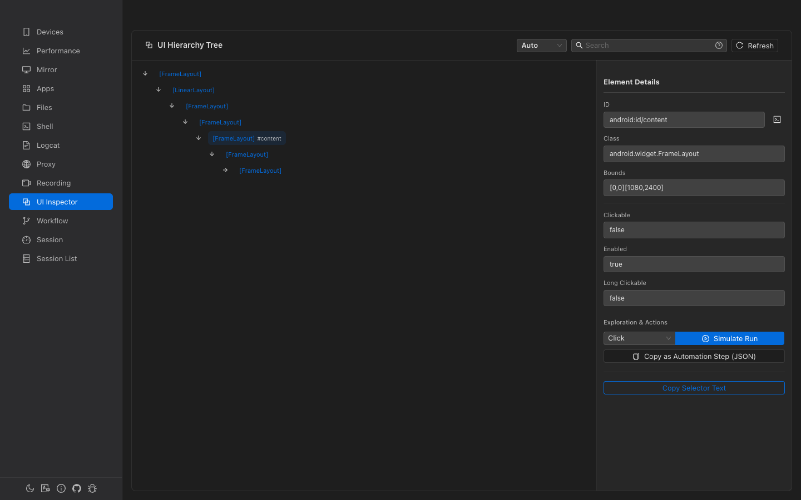

UI Inspector & Touch Recording
Browse the full UI hierarchy tree, inspect element properties, perform actions on elements, and record touch interactions for automation scripts.
Overview
UI Hierarchy Tree
Browse the complete Android UI element tree with expand/collapse and search.
Element Properties
Inspect text, resource-id, class, bounds, clickable, enabled, and more.
Element Actions
Click, long-click, swipe, or input text on any element directly.
Touch Recording
Record device interactions in Fast or Precise mode. Convert to workflows.
UI Hierarchy Tree
The tree displays all UI elements on the current device screen. Click Refresh to re-fetch the hierarchy.
Tree Node Display
Each node shows:
- Class name — Short form in brackets (e.g.,
[Button],[EditText]) - Text — Visible text in bold quotes (e.g.,
"OK") - Resource ID — Short ID after
/(e.g.,#btn_ok)
The first 2 levels are auto-expanded on load. A 2-second cache prevents unnecessary re-fetches.
Search Modes
Three search modes are available from the dropdown:
| Mode | Syntax | Example |
|---|---|---|
| Auto | Detects mode automatically | Any query |
| Text | Plain text substring | Login — matches text, id, class, contentDesc |
| XPath | Starts with // | //Button[@text='OK'] |
| Advanced | Uses :, =, AND/OR | clickable:true AND text:OK |
Advanced Operators
| Operator | Meaning | Example |
|---|---|---|
: or ~ | Contains | text:OK |
= | Exact equals | clickable=true |
^ | Starts with | id^com.app |
$ | Ends with | class$Button |
Matching nodes are highlighted and non-matching branches are hidden. A help tooltip (?) shows all syntax examples.
Element Properties
Select a tree node to open the 350px detail panel showing:
| Property | Copyable | Notes |
|---|---|---|
| Text | Yes | Element's visible text |
| Resource ID | Yes | Full resource-id string |
| Class | No | Full Java class name |
| Content Desc | No | Accessibility description |
| Bounds | No | Bounding rectangle (e.g., [0,0][1080,1920]) |
| Clickable | No | Always shown (true/false) |
| Long Clickable | No | Always shown (true/false) |
| Enabled | No | Shown if truthy |
| Focused | No | Shown if truthy |
| Scrollable | No | Shown if truthy |
Element Actions
Select an action from the dropdown and click Simulate to execute:
| Action | Description |
|---|---|
| Click | Tap the center of the element |
| Long Click | Long-press the element |
| Swipe Up/Down/Left/Right | Swipe from the element in a direction |
| Back / Home / Recent | Press device navigation keys |
| Input | Type text into the element (auto-selected for EditText elements) |
EditText element is selected, the action automatically switches to "Input" mode.
Quick Actions
- Copy as Workflow Step — Generate a JSON workflow step template from the selected element
- Copy Selector — Copy the best selector value (text > resourceId > contentDesc) to clipboard
After each action, the UI hierarchy is silently re-fetched after 800ms. If the hierarchy changed, an "UI Updated" notification appears.
Touch Recording
Record device touch interactions to create reusable automation scripts.
Recording Modes
| Mode | Description | Trade-off |
|---|---|---|
| Fast | Records raw touch coordinates only | Lowest latency, coordinate-based (fragile across different screen sizes) |
| Precise | Captures UI hierarchy per touch to identify elements | Higher latency, but produces robust element-based selectors |
Recording Flow
- Select a recording mode (Fast or Precise)
- Click Start Recording
- Touch the device to record actions — each tap, long-press, and swipe is captured
- Click Stop Recording
- Save the script with a name
Active Recording Indicators
- Red-bordered card with pulsating dot
- Live duration timer (MM:SS)
- Action counter showing events captured
- In Precise mode: status indicators (Dumping → Analyzing → Waiting for selector → Ready)
Selector Choice (Precise Mode)
In Precise mode, after each touch the system analyzes the UI and presents a list of selector suggestions ranked by priority. Select the best selector for robust replay, or fall back to coordinates.
Script Preview & Playback
Preview
After recording, a monospaced preview shows all captured events:
Each event has a lightning-bolt button for single-step execution (useful for debugging).
Playback
- Click Test Script or the play button to replay on the device
- Progress bar shows current event / total
- Auto-scaling — Coordinates are automatically adjusted for different screen resolutions
- Completed events are highlighted in green during playback
Script Management
Saved scripts appear in a virtual-scrolling list:
| Action | Description |
|---|---|
| Play | Replay the script on the selected device |
| Rename | Change the script name |
| Convert to Workflow | Transform the touch script into a visual workflow with proper step types and connections |
| Delete | Remove the script (with confirmation) |
Batch selection with select-all checkbox and bulk delete is supported.
Convert to Workflow
Conversion creates a full workflow with:
- A Start node
- Wait steps for delays between events (>50ms)
- Element-based steps (click_element, long_click_element, swipe_element) using selectors from Precise recording
- Coordinate-based bounds selectors as fallback
- Sequential connections between all steps
Element Selector Types
| Type | Description | Robustness |
|---|---|---|
text | Match by visible text | High (if text is stable) |
id | Match by resource-id | High |
desc | Match by content-description | High |
class | Match by Java class name | Medium |
xpath | XPath expression | Medium (depends on hierarchy) |
bounds | Direct bounding rectangle | Low (screen-size dependent) |
coordinates | Raw x,y coordinates | Lowest |